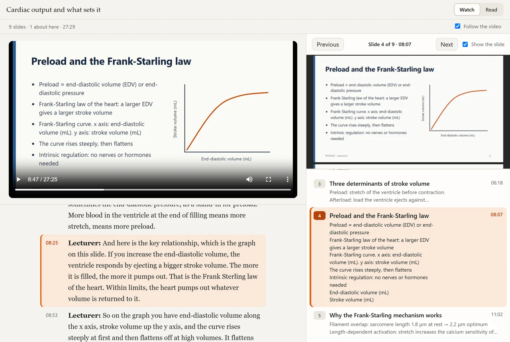
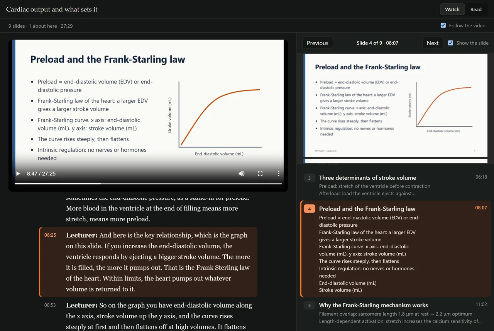

StreamSnagGuidesSync slides with the recording
How to sync lecture slides with the recording
At the end every slide carries the minute it was on screen, and the video, the slides and the transcript move together. Pro, with no AI account.
You have the slide deck and you have the recording, and they do not know about each other. Finding where slide 23 was explained means scrubbing through the video. Matching the two by hand takes an evening. This does it in a few seconds.
What a study page is
StreamSnag builds one page with three things side by side: the video, the list of slides, and the transcript. Every slide carries the minute it came up. While the video plays, the current slide and paragraph are marked. Click a slide or a minute and the video jumps there. The page is saved next to the lecture and works offline. There is a sample study page you can open; it has no video, so choose a slide to see the transcript follow.
What you need
- StreamSnag Pro. Your first lecture is free, with no card.
- The lecture saved, and its transcript. See how to transcribe a lecture if it has no captions.
- The slides as a PDF or a PowerPoint file. If the deck is in another format, export it to PDF first.
The steps
Save the lecture and its slides
On the lecture page, download the video. Files on this page lists the PDFs and PowerPoint files the lesson links to. Save the slide deck from there, so it sits in the same folder.
Make sure there is a transcript
Slides are matched to what is said, so the words are needed. A lecture with captions already has them. For one without, press Transcribe on this computer once it is saved.
Show the path and press Make study page
Under the lecture, “Show the path” opens the lecture's five steps. The third is Study page, with the button “Make study page”. If the page has more than one document, StreamSnag asks which one is the slides and offers its best guess. Pick the deck, not the reading list.
Read the result line
When it is done it says how well the match went, for example “Matched 9 of 11 slides; 2 are marked as approximate”. Then open the study page.


How the matching works
It compares the words on each slide with the words the lecturer says, in order, and finds where each slide's vocabulary turns up in the transcript. No AI is involved and nothing is uploaded. That also tells you where it will struggle: a slide with a title and a photograph has very little to match on.
Good to know
- Slides marked approximate. Where the match is unsure, the slide is placed between its neighbours and labelled as approximate. Treat its minute as a starting point.
- A deck of pictures. Slides that are scans or images have no text to compare. The study page can still show the video and transcript together, without slide times.
- Slides shown out of order. The match keeps the slides in the order of the deck, so a slide the lecturer went back to later is only placed once.
- The wrong document. If the syllabus was picked instead of the slides, make the study page again and choose the other file.
- No slides at all. StreamSnag says “No slides were found on this page”. You still get the video and the transcript in step.
Questions
Does matching slides to a lecture need an AI account?
No. It is done on your own computer by comparing words. No AI account is used and nothing leaves your computer.
Which slide formats work?
PDF and PowerPoint files. For a deck made in another program, export a PDF and use that.
Do the slides need to be visible in the video?
No. The match uses the text of the slide file and the transcript, not the picture, so it works when the camera was on the lecturer.
Is the study page free?
It is part of Pro, which is US$39.97 a year, US$4.99 a month, or US$99.95 once for life. Saving the lecture and its slides is free. This step needs no AI, so that is all it costs. The study tools that do use AI run on your own AI account, never paid to StreamSnag: nothing extra with a Claude or ChatGPT subscription you already have, or a few cents to about US$1.50 a lecture with a pay-as-you-go key.
Put the slides back in the lecture.
The study page is step four of the walkthrough on the page about how it works, and Pro takes your first lecture free, with no card.
Get StreamSnag, free